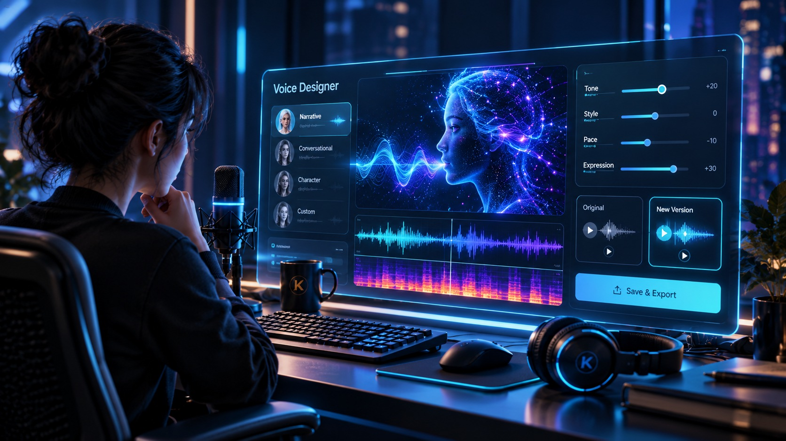

Installer will not start
Check that the final release supports your Windows edition and CPU architecture. Record the full error; do not disable system protection to force an unverified installer.
Voice Designer / Draft user guide
Hardware guidance and symptom-first troubleshooting for the proposed standalone Kira Labs Voice Designer. These numbers describe a current experimental voice-generator path and provisional planning targets—not a certified minimum for a final download.
Updated October 25, 2026 · Backend preview tested, general release pending
Oct 25 update · actual tests and limits
On the existing Windows 11 25H2 computer, the unsigned preview successfully installed an isolated Python runtime, dependencies and a local model. Eleven of eleven model files were checked, and two different original synthetic voices were generated by the installed command-line backend: 2.72 and 3.92 seconds. Uninstall and reinstall passed, with saved WAV and cached model data retained.
Limitations: the new native interface has not been opened or button-tested. A clean Windows computer, missing Microsoft C++ runtime, lower RAM/VRAM, and non-NVIDIA GPU routes are unqualified. The successful test computer had 32 GB RAM and an RTX 5060 Ti with 16 GB dedicated VRAM, not certified minimum specifications.
Computer guidance · draft
The middle column describes current engineering guards, not universal minimum requirements. The right column contains suggested planning targets that must be tested before publishing a supported-computer list.
| Component | Current experimental status | Provisional planning target |
|---|---|---|
| Windows | Current wrapper uses 64-bit Windows. Supported editions are not yet certified. | 64-bit Windows 11, subject to final installer and driver qualification. |
| CPU | The experiment has used two logical processors; no measured minimum CPU model is established. | Modern x64 CPU with four or more cores. |
| System RAM | The experimental preflight asks for roughly 10 GiB available before startup, including a 6 GiB voice-family limit and 3 GiB free-memory reserve. Not an installed-RAM minimum. | 32 GB installed, with roughly 16 GiB available before running the app. |
| GPU & VRAM | Current configured CUDA path checks around 9 GiB total and free VRAM before loading, and reserves an additional 1 GiB. GPU fit has not yet been proven. | Compatible NVIDIA GPU with 16 GB dedicated VRAM; 12 GiB free is a planning target, not a certified requirement. |
| Disk | The selected cached Qwen payload alone is approximately 4.52 GB (4.21 GiB). It excludes dependencies, additional models, generated audio and temporary files. | SSD with about 30 GB free as a planning allowance; final requirements depend on the actual release package. |
| Drivers | The NVIDIA driver must support the CUDA/PyTorch runtime selected in the release. | Use officially distributed drivers tested with the final package; no single version floor is certified. |
| Internet | Initial model and runtime downloads require a connection. Offline operation requires a complete, compatible local cache. | Stable connection for first setup, followed by a successful disconnected-computer test before any unconditional offline promise. |
| Audio | A working Windows playback device is needed to hear generated previews; optional authorized reference capture requires a microphone. | Headphones for careful review and a quiet recording setup when supplying your own authorized material. |
Units: GB is decimal; GiB is binary. Available RAM differs from installed RAM, and shared GPU memory is not equivalent to dedicated VRAM. Smaller engines and CPU fallbacks each require independent validation. The table is not a purchase recommendation.
Troubleshooting · keep the useful error
Check that the final release supports your Windows edition and CPU architecture. Record the full error; do not disable system protection to force an unverified installer.
Check the selected engine's supported GPU, driver and CUDA/PyTorch combination. Integrated or non-NVIDIA graphics do not satisfy the current CUDA route. No untested CPU fallback is promised.
Save other work, close unnecessary applications and re-check *available* memory. Do not disable safety guards or assume that installed capacity equals free capacity.
Use the release's reviewed runtime and official vendor/Windows driver updates. Avoid downloading individual DLL files from unofficial websites.
Check free disk space, internet connection and the future documented repair flow. Incomplete files must fail integrity verification.
Preserve a sanitized full error and the selected environment. The present internal Windows path-check failure occurred before audio generation; it is not an audio-quality finding.
Verify that a nonempty WAV was produced and can be played outside the app. Then review Windows output device, volume and mute settings. A silent mock is not proof of synthesis.
Keep the failed WAV and settings. Repeat with shorter, clearly punctuated text only using supported controls; never overwrite a previously approved voice reference.
Confirm which authorized reference WAV was used. Compare the same spoken passages and retain both outputs. Similarity across engines requires separate tests.
Complete and verify the entire model cache while connected. Leave room for dependencies, temporary audio and backups before testing offline operation.
Support request checklist
Record the app and model versions, Windows edition, CPU, installed and available RAM, GPU and dedicated VRAM, driver version, chosen engine, the precise failed step and a sanitized error log. State whether a WAV was produced and whether you could hear it. Remove passwords, tokens, private recordings and personal file paths before sharing.
October 25 source evidence establishes backend generation and install/reinstall on one Windows computer, but not tested 0.1.6 native GUI controls or a qualified general-public installer. The requirements remain provisional.